Connectro
Each tap is a step in a clever chain reaction. Paint vibrant murals by triggering tiles that spread colour in unique patterns — plan ahead, don't get stuck, and finish in as few moves as possible.
About the game
Connectro is a mobile puzzle game built around different tile patterns. The city is your canvas — each wall is a puzzle, each puzzle is a mural waiting to be painted. You trigger tiles that spread colour outward in distinct patterns; the goal is to cover the board in as few taps as possible. Think ahead, because a careless placement not only wastes moves, but can also leave you stuck!
Beyond the main puzzle mode, Connectro features a roguelike mode that remixes the mechanics and an online leaderboard that turns every run into a competition. The game is also designed to deliver genuine moments of insight — the kind where a new strategy comes up in your mind.
Gallery


Gameplay
- Tile chain-reaction puzzle system
- Fewer moves, better rating (1–3 stars)
- Roguelike mode with escalating challenge
- 4–7 "epiphany" moments
- Unique colour spread per tile type
- City exploration meta-layer
- Global online leaderboard
- Portrait mobile-first design
My Contributions
As the lead programmer, I wrote or actively participated in the creation of all key systems and gameplay elements.
Systems Programming
Level generation, editor, and solver
To obtain tools for efficiently creating game content, large quantities of which are crucial in mobile games, I created two tools:
Level Generator - A system that allows you to create a random map based on given parameters, such as the map size and the percentage chance of a given tile type appearing. Additionally, you could provide a specific seed to this tool, which would be taken into account during generation.
Level Editor - A system that allows you to edit a map generated by the generator or create a completely new one. This tool was used to create maps for the tutorial and those that would present the player with a specific challenge.
I also helped create the third key system:
Level Solver - A system that, in conjunction with a generator, found a solution to a given puzzle immediately after the map was created, providing the number of moves needed to solve it and thus calculating the move thresholds needed to obtain a given number of stars. The solver is based on the A-Star algorithm and several heuristics for different star ratings. The heuristic needed to determine the 3-star threshold had to find the best or near-best solution in a finite amount of time. An ideal heuristic would solve the maps in centuries; the one I proposed reduced this time to about 4 minutes while maintaining very high efficiency in finding ideal or near-ideal solutions.
Additional
Besides the tools mentioned, I also created:
- 3D object display system with frustum culling (3D not natively supported by GameMaker)
- UI system
- Display adjustments depending on the phone's screen aspect ratio.
- Map movement system
Gameplay Programming
- Effects of pressing each tile
- Hover showing the effect after pressing
- Roguelike Mode
- Visual Effects
Game Design
As a designer, I was responsible for coming up with a game idea that fit the theme, preparing quick physical prototypes, and then implementing them digitally. I also developed the rules for the core gameplay loop and the changes that needed to be made to the roguelike mode.
Idea and Research
To develop a game idea that fit the theme of Łódź Murals, I decided to browse all the Łódź murals I could find to gain some meaningful inspiration. So I reached for the book "Łódzkie Murale. Niedoceniona grafika użytkowa PRL-u" by Bartosz Stępieński and browsed the resources of the website Stare napisy. Grafika reklamowa na ścianach budynków. Łódzkie Murale.
Among the many different murals, I noticed a repeating pattern of colorful squares, deceptively similar to pixel art. All of these works were by the same artist – Andrzej Feliks Szumigaj. This was a strong inspiration and suggestion, considering the limitation of not having a graphic designer on our team.
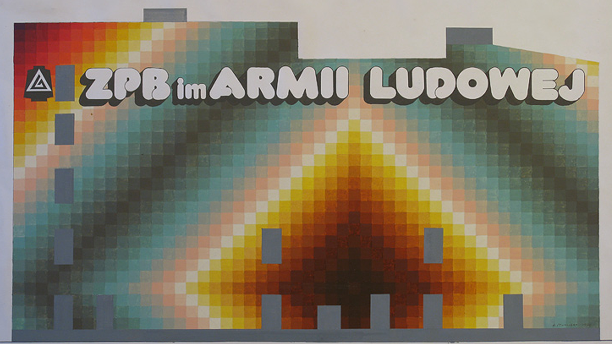
The Cotton Industry Plant named after the People's Army "ALBA".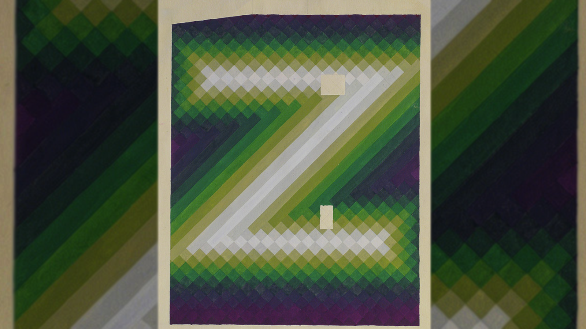
Union of the Knitting and Hosiery Industry.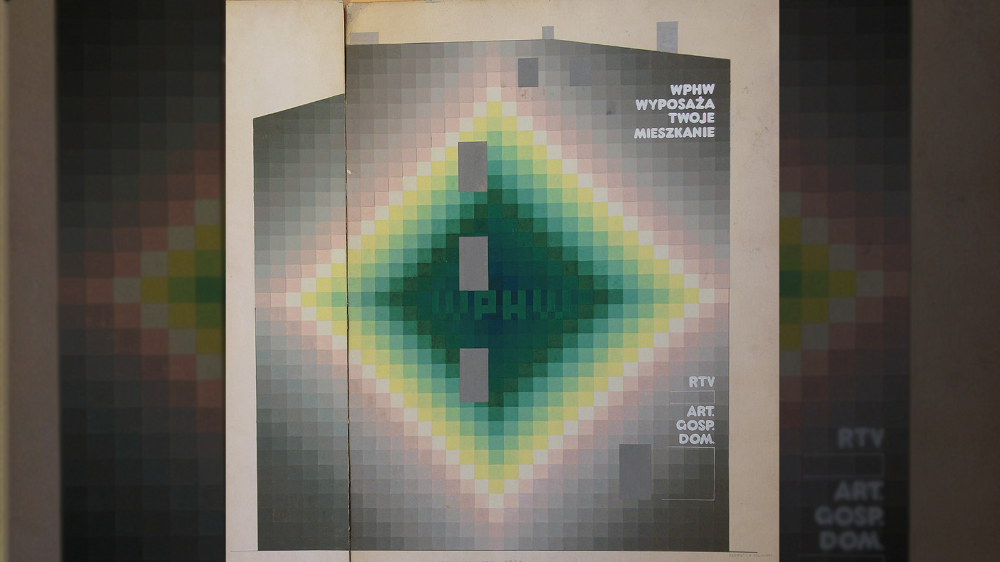
Voivodeship Internal Trade Company.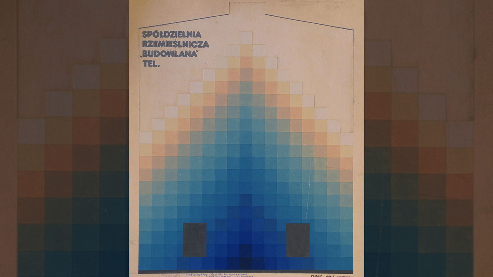
"Budowlana" Craft Cooperative.The second key element was the design of an unrealized Totalizator Sportowy advertising mural by Roman Szybiński, found in the aforementioned book.
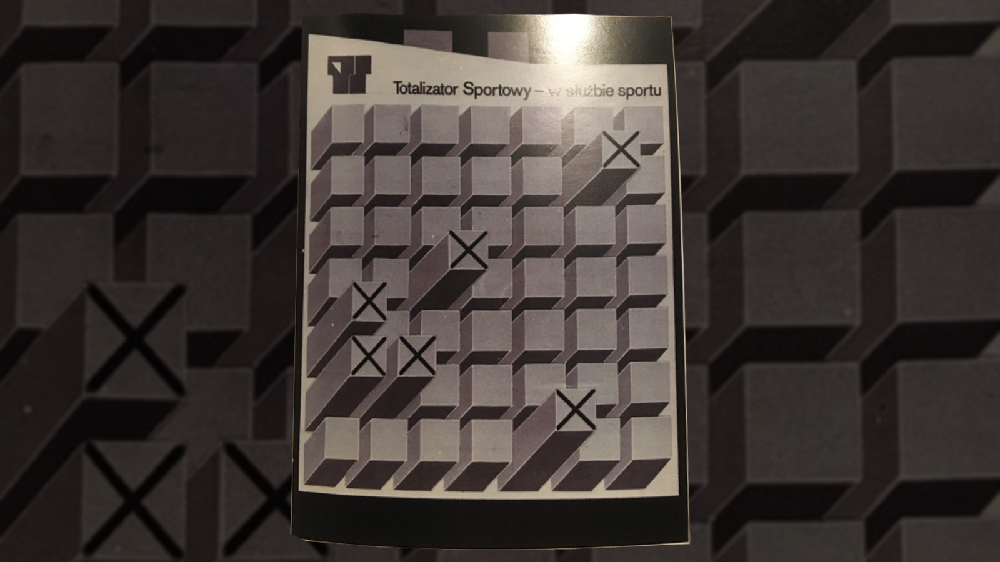
Second-generation advertising design by Roman Szybiński.This design strongly reminded me of The board of a minesweeper, and the protruding elements are just begging to be pressed on the touchscreen. This is how the first vision of the project was created:Game simmiliar to minesweeper, but when you click on a field, a colorful shockwave appears on the grid, revealing or chanching some tiles further.
Prototyping
To quickly test the idea, I prepared a physical prototype using a deck of cards and coins. The suit of the card indicated the shape that would be revealed, and its value indicated how far the discovery would go. I used coins to mark active tiles, meaning those that could be activated to reveal more.
Example of a prototype game. After activating the 2 of Diamonds, cards in a diamond shape of size 2 were revealed. Only the outermost cards could be activated further.
After several games and determining that such a game made sense, it was necessary to transfer it to a computer prototype to check in a more controlled environment whether the game had a dominant strategy or obvious blockers.
Epiphanies
When I created the digital prototype, my team and I played through a few basic maps, trying to beat our own records. At first, we were worried the game was flawed by a dominant strategy, but with each day of play, we discovered new methods and unconventional moves that improved our scores. We called these moments, when the player discovers a new tactic or insight, "Epiphanies," and decided to base the subsequent gameplay design on them.
A few examples of "Epiphanies" stemming directly from our intentional design are:
- Clicking the tiles that reveal most of other tiles isn't necessarily the best option.
- Tile effects wrap around the screen.
- At the beginning of the map, all tiles flash, and you can see which type is where.
- Two tiles, regardless of the order in which they are activated, will reveal the same tiles but activate different ones.
Design by addition & by subtraction
To prevent the large number of maps from quickly becoming boring and repetitive, I used design by addition, adding new tiles to subsequent maps, but also design by subtraction, removing some that were present in the game from the beginning. This allows different maps in different biomes to have completely unique sets of tile types. For example, if a player becomes accustomed to target tiles that allow them to reveal any other tile, they may not appear at all in subsequent maps. Combined with the addition of wall tiles, this forces the player to approach the game completely differently.
Player expression
From my perspective, a very important element was to give the player the opportunity to express themselves. I wanted the game to not only visually reference the Łódź Murals but also allow the player to create their own design inspired by the style of Andrzej Feliks Szumigaj. The map generation limits complete freedom, but even by earning all three stars, you can create different murals. To further enhance the feeling of creating your own work, after painting, you see it on a building that you can spin, and it is also visible in the map selection until repaint. This also allows the player to better associate a specific building in the map selection view with the challenge it offers.
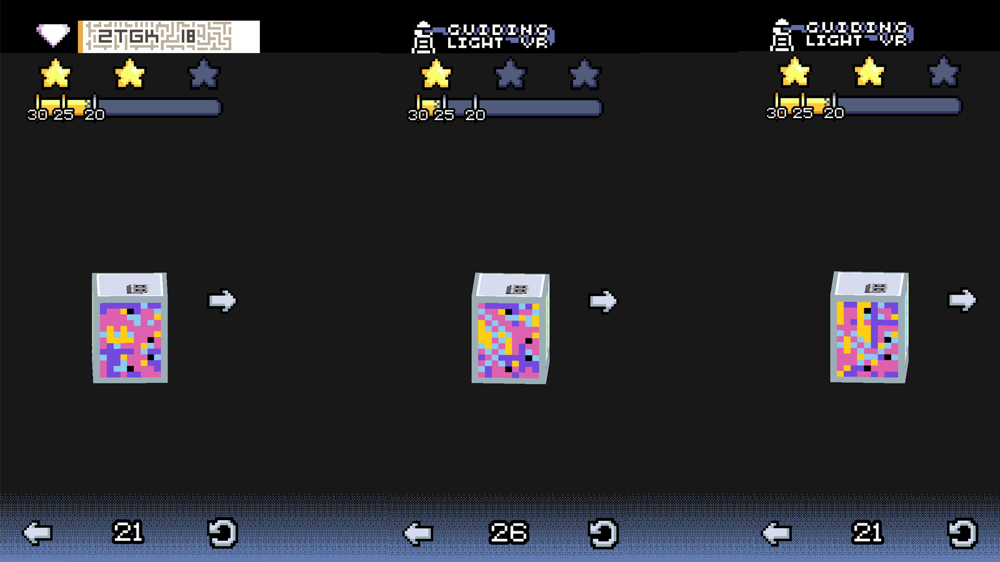
Same level finished with three different murals.Roguelike mode
The final key design element was adapting the core gameplay loop to a roguelike format. We used our level generation tools to create an infinite number of levels on the fly. Additionally, this mode features "paints," or additional tiles, that can be placed anywhere on the map and instantly activated. After completing each map, the player gains one paint, and its tile type and strength depend on the number of stars earned.
This mode not only appeals to players looking for a different gameplay format, but also addresses the frustration of some players who, upon failing a level, wish to place a different tile anywhere. On the other hand, skillful placement of "paints" can make the map completely trivial, while inappropriate placement can completely block the player. This introduces an additional strategic element: whether the player wants to use up the "paint" immediately or try to complete the map without it to gain more.
Pixel Art
As the only person on the team with any artistic skills, I was responsible for creating the tile graphics, building textures, the environments on the level selection map, and the entire UI.
During the iteration process, each tile type was given a unique color, outline, and characteristic shape distinguishable by colorblind individuals.
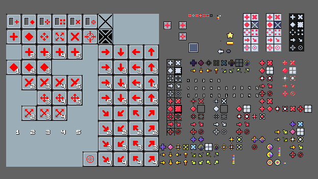
Multiple iterations of tile appearance.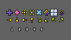
Final version of the tiles.The textures of the buildings and environments have been created to represent specific sections of the map. Each building has a single blank wall, onto which a texture of a player-painted mural is applied. Although the buildings are simple boxes, the textures created through shading give the illusion of depth to elements like chimneys and windows.
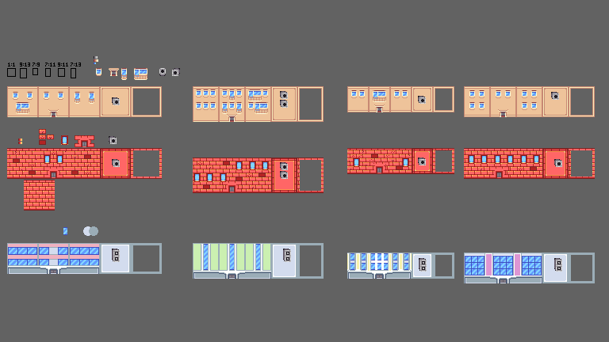
Building textures.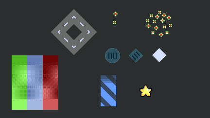
Envirionemnt elements.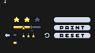
Selected UI elements.Sound Design
As the only person on the team with any musical skills, I was responsible for preparing satisfying sounds for activating tiles of varying strength and creating the soundtrack.
The song that plays in the level select menu.
The song that plays after the mural is painted.
I also contributed to: Systems Prog. Gameplay Prog. — to learn more switch to Programming
I also contributed to: Game Design Pixel Art Sound Design — to learn more switch to Design
Credits
| Miłosz Kawczyński | Design & Programming & 2D & Sound Design |
| Michał Galiński | Production |
| Mikołaj Przybylski | Design & Programming |